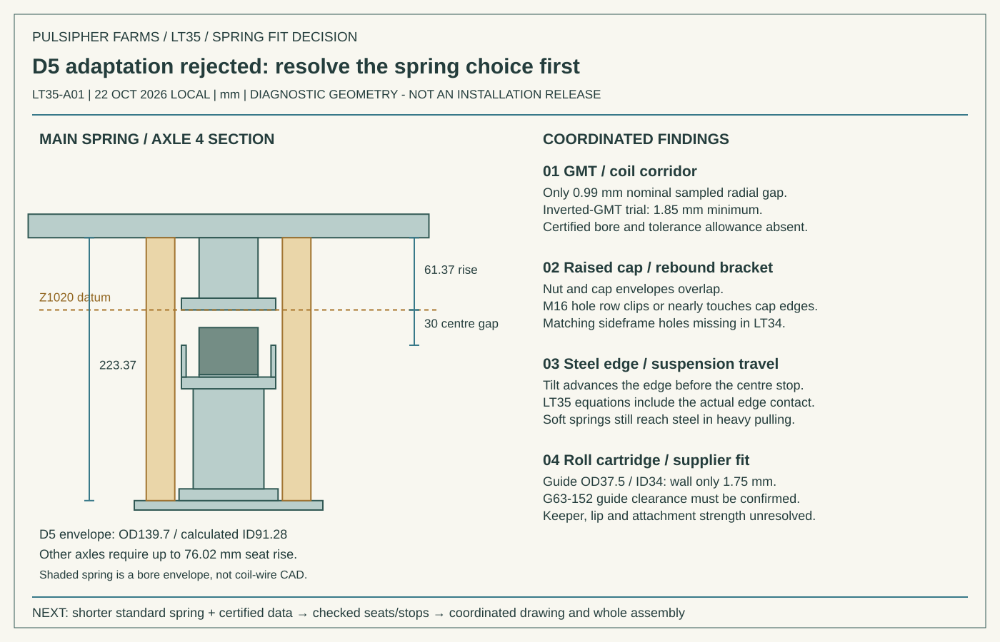

LT35 · SPRING FIT AND PROCUREMENT
Replace D5 before adding more frame changes
The D5 fit review fails the project’s simplicity objective. Stop developing its raised-seat arrangement and seek a shorter standard spring. Four G63-152 roll springs remain a candidate, subject to the guide and supplier checks below.
Quote requests sent; spring package not yet priced or accepted. COMET and Strato have requests for eight D5 springs, certified dimensions/rate, and shorter catalog alternatives. Special Springs North America has a request for four G63-152 springs and application guidance. No order has been placed. LT33 remains the integrated 3D baseline; there is no accepted replacement arrangement to integrate yet.
Supplier requests and cost
| Supplier / quantity | Part and purpose | Status |
|---|---|---|
| COMET ×8 | 100402 / D5 Outer | RFQ sent; response and certified data pending |
| Strato ×8 | D5-O | RFQ sent; response and certified data pending |
| Special Springs North America ×4 | G63-152 | US quote and application/guide-clearance inquiry sent; response pending |
The D5 requests include unit and eight-unit price, stock, dispatch lead time, freight to Logandale, certified free/solid dimensions and bore tolerances, measured working rate, end form, and working-load/fatigue restrictions. Follow-up requests prioritize a shorter standard part; D5 pricing is now a comparison only.
Berger’s G63-152 listing remains [price removed] each, or [price removed] for four excluding VAT. It lists up to five for dispatch 27 October 2026. US freight, transit, tax and landed cost are unconfirmed. There is no valid complete-package total while the main springs remain unselected and unquoted. Checked 22 October local / 23 October UTC.
Why the D5 arrangement stops here

| Finding | Measured or calculated result | Decision |
|---|---|---|
| Raised main seats | 61.37–76.02 mm above the original upper-seat level | Exceeds the intended minor seat adaptation; requires frame, bracket and stop changes. |
| GMT inside the coil | LT34 nominal sampled bore gap about 0.99 mm; inverted bumper trial only 1.85 mm minimum across 2,520 inherited poses | Inverting the bumper alone does not provide a credible tolerance allowance. No helical-wire/bowed-coil or certified-bore clearance established. |
| Steel contact | Tilted rim contacts before the original 30 mm centre-plane limit | Corrected in the diagnostic equilibrium model below. No hardware fix is claimed. |
| Rebound nut and cap | Nut envelope Z1070–1097 at Y±420 overlaps the cap envelope by about 8 mm laterally and 0.98–15.63 mm vertically | Cap needs a swept notch/access envelope; supplier seat choice comes first. |
| Bracket fasteners | Upper Ø17 row at Z1090 clips or nearly touches the cap undersides; the only fully enclosed lower edge has 0.13 mm ligament. Mating sideframe holes are absent in the LT34 rebuild | LT34 mounting detail cannot be released. New hole positions, edge distances and load path would add more redesign. |
| Roll guide | Ø37.5/34 gives a 1.75 mm tube wall and only 0.25 mm nominal radial clearance against the 38 mm guide envelope | Manufacturer guide clearance and a coordinated stem/keeper/guide design remain open. |
Corrected softer-spring checks
The rerun retains LT34 hardware, mass and spring settings to diagnose that candidate. Two finite rim-edge constraints per corner replace the centre-plane steel stop, and their actual lateral reaction positions enter the wheel moment balance. This resolves the numerical edge penetration; it does not resolve the physical installation.
| Case set | Converged | Minimum wheel load | Old steel reaction | Corrected steel reaction |
|---|---|---|---|---|
| nominal | 504/504 | 2,169 N | 0 N | 0 N |
| soft-bumper | 504/504 | 2,150 N | 892 N | 1,439 N |
| soft-springs | 504/504 | 2,396 N | 4,083 N | 4,304 N |
All 1,512 cases converge with less than 0.006 N scaled equilibrium residual and only numerical-roundoff contact penetration. The soft spring set still reaches steel during heavy pulling, as well as brake/fault cases. Both spring rates are reduced 10% at fixed seats, so preload reduces too; the GMT force curve is reduced 20%. D5’s ±10% rate is an assumed sensitivity, not supplier certification. Body/truck and spring energy retain the inherited small-angle, quasi-static assumptions; impact and fatigue are not assessed.
Seat and guide strength screen
| Cap effective width | Bending stress | Deflection |
|---|---|---|
| 160 mm | 144 MPa | 0.194 mm |
| 100 mm | 230 MPa | 0.310 mm |
This preliminary cap screen uses the maximum coincident LT34 spring + bumper + steel reaction, 34.065 kN, on a 20 mm plate spanning 180 mm; assumed E = 200 GPa and a simply supported central resultant. It is a sensitivity to effective width, not an approved load path or material check. Holes, welds, sideframe support, distributed coil bearing, impact and fatigue remain unresolved.
The roll-guide tube area is 196.5 mm². A Ø37/30 guide would provide 368.4 mm², but would require a smaller plunger and coordinated keeper/lip changes. This is a redesign option only. Ordinary coil force is not the guide’s capture load; capture load, bolt grade, engagement, keeper bearing and weld details must be established before rating the guide or attachments. No strength pass is recorded.
Shorter standard spring: supplier screening envelope
Eight identical commercial springs, with measured per-axle seat spacers. Preferred maximum datum height 162 mm; a bounded alternative allows a 20 mm cap raise. Prefer OD ≤140 mm and certified bore ≥100 mm through working travel. Other working rates can be evaluated. These coupled targets are an inquiry envelope, not a selected part or purchase specification.
| Cap rise | Rate to screen | Common free length | Maximum solid height* | Spacer spread |
|---|---|---|---|---|
| 0 mm | 300 N/mm | 191.2 mm | 107.8 mm | 19.2 mm |
| 0 mm | 400 N/mm | 183.9 mm | 112.6 mm | 14.4 mm |
| 20 mm | 300 N/mm | 211.2 mm | 127.8 mm | 19.2 mm |
| 20 mm | 400 N/mm | 203.9 mm | 132.6 mm | 14.4 mm |
*Solid-height bound includes 30 mm compression and a provisional 5 mm residual allowance, which still needs tolerance/service justification. Datum loads per spring by axle are 12.686, 8.766, 14.310 and 14.518 kN. Free length = maximum datum height + 8,765.832/rate. Each datum height = free length − its preload/rate. Spring-only force at +30 mm reaches 23.5–26.5 kN across this rate band. Spacer design must preserve the independent bumper gap; full movement and rebound retention need recalculation for the actual selected part.
Next milestone and remaining dependencies
| Deliverable | Current state | Required to close |
|---|---|---|
| Priced spring package | Incomplete; three supplier inquiries sent | Accepted shorter main part, confirmed eight-unit price/stock/lead, four roll units and landed cost. |
| Bumper and seat arrangement | D5 adaptation rejected | Certified spring bore/height; revised independent stop geometry; finite-edge and softer-rate reruns. |
| Seat, guide and attachment checks | Dimensional audit and cap screen complete; strength unresolved | Rated capture loads, materials/fasteners, weld details and full swept clearances. |
| One coordinated installation drawing and full 3D | Not issued; LT33 baseline remains visible | Accept the spring and resolve local fit/load paths before updating the complete assembly. |
Evidence
Corrected calculation summary · Dimensional audit and sourcing targets · Supplier request record · Historical LT34 drawings and calculations
D5 dimensions remain based on the Wabtec/Standard Car Truck manual, revision 7/23, page 3-B-2. Supplier certification is outstanding. The record distinguishes requested information, public catalog data, calculated screens and accepted hardware.